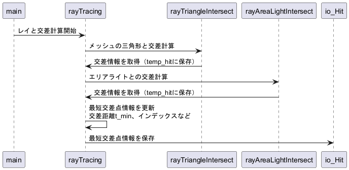

◆ computeShading()
レイのシェーディング（光の寄与）を計算する関数 レイがシーン内のオブジェクトやエリアライトと交差した場合に、その交差点での光の寄与（直接光、反射、屈折、拡散反射）を計算します。 交差したオブジェクトのマテリアル特性に基づき、確率的に光の反射や屈折を考慮します。
 
シェーディング計算フロー概要 処理の概要:
1. エリアライトに直接衝突した場合レイがエリアライトに衝突した場合、その光の強度と色を計算します。 if (in_RayHit.mesh_idx < 0) // レイがエリアライトに当たった場合
{
if (!in_RayHit.isFront) // 裏面に当たった場合は無視
return Eigen::Vector3d::Zero();
// エリアライトの光の強度と色を返す
return in_AreaLights[in_RayHit.primitive_idx].intensity * in_AreaLights[in_RayHit.primitive_idx].color;
}
2. 交差点と法線の計算交差点とその法線を計算します。 const Eigen::Vector3d x = in_Ray.o + in_RayHit.t * in_Ray.d; // 交差点の座標
Eigen::Vector3d I = Eigen::Vector3d::Zero(); // 初期化
Eigen::Vector3d computeRayHitNormal(const Object &in_Object, const RayHit &in_Hit) レイと交差した点における補間された法線ベクトルを計算する関数 Definition Intersection.cpp:319 3. マテリアル特性の取得拡散、鏡面反射、屈折の最大寄与率を取得します。 const double kd_max = in_Object.meshes[in_RayHit.mesh_idx].material.kd.maxCoeff();
const double ks_max = in_Object.meshes[in_RayHit.mesh_idx].material.ks.maxCoeff();
const double kt_max = in_Object.meshes[in_RayHit.mesh_idx].material.kt.maxCoeff();
4. 直接光の計算拡散反射の最大寄与率 if (kd_max > 0.0)
{
I += computeDirectLighting(
in_AreaLights, x, n, -in_Ray.d, in_RayHit,
in_Object, in_Object.meshes[in_RayHit.mesh_idx].material, in_Ray.depth
);
}
Eigen::Vector3d computeDirectLighting(const std::vector< AreaLight > &in_AreaLights, const Eigen::Vector3d &in_x, const Eigen::Vector3d &in_n, const Eigen::Vector3d &in_w_eye, const RayHit &in_ray_hit, const Object &in_Object, const Material &in_Material, const int depth) 直接光（エリアライトの寄与）を計算する関数 Definition PathTracer.cpp:149 5. 間接光のランダムサンプリングランダム値に基づいて間接光の寄与を計算します。 if (r < kd_max)
{
// 拡散反射の寄与を計算
I += in_Object.meshes[in_RayHit.mesh_idx].material.kd.cwiseProduct(
x, n, -in_Ray.d, in_RayHit, in_Object,
in_Object.meshes[in_RayHit.mesh_idx].material, in_AreaLights, in_Ray.depth
)
) / kd_max;
}
else if (r < kd_max + ks_max)
{
// 鏡面反射の寄与を計算
I += in_Object.meshes[in_RayHit.mesh_idx].material.ks.cwiseProduct(
x, n, -in_Ray.d, in_RayHit, in_Object,
in_Object.meshes[in_RayHit.mesh_idx].material, in_AreaLights, in_Ray.depth
)
) / ks_max;
}
else if (r < kd_max + ks_max + kt_max)
{
// 屈折の寄与を計算
I += in_Object.meshes[in_RayHit.mesh_idx].material.kt.cwiseProduct(
x, n, -in_Ray.d, in_RayHit, in_Object,
in_Object.meshes[in_RayHit.mesh_idx].material, in_AreaLights, in_Ray.depth
)
) / kt_max;
}
Eigen::Vector3d computeReflection(const Eigen::Vector3d &in_x, const Eigen::Vector3d &in_n, const Eigen::Vector3d &in_w_eye, const RayHit &in_ray_hit, const Object &in_Object, const Material &in_Material, const std::vector< AreaLight > &in_AreaLights, const int depth) 鏡面反射（反射光）の寄与を計算する関数 Definition PathTracer.cpp:596 Eigen::Vector3d computeRefraction(const Eigen::Vector3d &in_x, const Eigen::Vector3d &in_n, const Eigen::Vector3d &in_w_eye, const RayHit &in_ray_hit, const Object &in_Object, const Material &in_Material, const std::vector< AreaLight > &in_AreaLights, const int depth) 屈折光の寄与を計算する関数 Definition PathTracer.cpp:717 Eigen::Vector3d computeDiffuseReflection(const Eigen::Vector3d &in_x, const Eigen::Vector3d &in_n, const Eigen::Vector3d &in_w_eye, const RayHit &in_ray_hit, const Object &in_Object, const Material &in_Material, const std::vector< AreaLight > &in_AreaLights, const int depth) 拡散反射の寄与を計算する関数 Definition PathTracer.cpp:491 6. 結果を返却最終的な光の寄与ベクトルを返却します。 return I;
コード解説:const double kd_max = in_Object.meshes[in_RayHit.mesh_idx].material.kd.maxCoeff();
ドット演算子は、クラスや構造体の インスタンス のメンバー（変数や関数）にアクセスするために使用 この場合Objectのメンバー meshes にアクセス→特定のメッシュ（TriMesh）を取得→ →TriMesh のメンバーである material にアクセス→Material 型のメンバーである kd にアクセス kd は Eigen::Vector3d 型。maxCoeff()はeigenベクトルで最大値を返す。
|
構築: